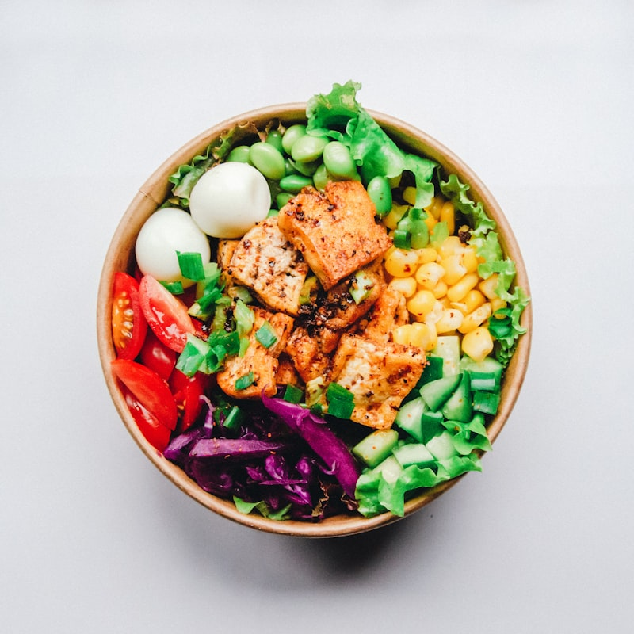

Recetas Fitness Vol. 2 — Tu Siguiente Paso Hacia el Equilibrio Hormonal
Si ya completaste el Volumen 1, felicidades: ya diste el paso más importante, que es comenzar. Ahora sabes que alimentarte bien no tiene que ser aburrido, restrictivo ni complicado. En este segundo volumen, vamos más allá. Aquí encontrarás 50 nuevas recetas diseñadas especialmente para mujeres de 40 años en adelante que buscan reactivar su metabolismo, preservar su masa muscular y lograr un equilibrio hormonal real. Después de los 40, el cuerpo cambia: la sensibilidad a la insulina disminuye, el metabolismo se vuelve más lento y la composición corporal tiende a cambiar. Pero la buena noticia es que la alimentación correcta puede revertir ese proceso. Cada receta de este volumen fue pensada para nutrir tu cuerpo con proteínas de calidad, grasas saludables, fibra y carbohidratos de bajo impacto que mantienen estables tus niveles de insulina. Cuando comes de esta manera, tu cuerpo deja de almacenar grasa y comienza a usarla como combustible. Al mismo tiempo, preservas el músculo, que es tu mayor aliado para mantener un metabolismo activo. No se trata de pasar hambre. Se trata de elegir los alimentos correctos, en las combinaciones correctas, para que tus hormonas trabajen a tu favor. Prepárate para disfrutar cada comida mientras transformas tu cuerpo desde adentro.

Desayunos Energéticos
Comienza tu día con energía estable y sin picos de insulina. Estos desayunos combinan proteína, fibra y grasas saludables para activar tu metabolismo desde temprano y mantenerte satisfecha durante toda la mañana.
- 1 banana madura
- 1 huevo entero y 1 clara
- 2 cucharadas de harina de almendras
- 1 cucharada de linaza molida
- 1/2 cucharadita de canela en polvo
- 1 pizca de sal
- Machaca la banana con un tenedor hasta formar un puré suave.
- Agrega el huevo, la clara y mezcla con un batidor hasta integrar.
- Incorpora la harina de almendras, la linaza y la canela, mezclando hasta obtener una masa homogénea.
- Calienta una sartén antiadherente a fuego medio-bajo y engrasa ligeramente con aceite de coco.
- Vierte porciones pequeñas de masa y cocina 2 minutos por lado hasta que estén doradas.
- Sirve tibios acompañados de frutos rojos frescos y un toque de mantequilla de maní natural.
- 4 cucharadas de avena en hojuelas
- 150 ml de leche de almendras sin azúcar
- 2 cucharadas de semillas de chía
- 1/2 taza de frutos rojos congelados
- 1 cucharada de mantequilla de maní
- Edulcorante natural al gusto
- En un frasco de vidrio con tapa, mezcla la avena, la leche de almendras y las semillas de chía.
- Añade la mantequilla de maní y revuelve hasta que se integre bien.
- Agrega los frutos rojos congelados por encima sin mezclar.
- Tapa el frasco y llévalo al refrigerador por al menos 6 horas o durante toda la noche.
- Por la mañana, revuelve todo junto y agrega edulcorante si lo deseas.
- Consume frío directamente del frasco o en un bowl.
- 4 claras de huevo
- 1/4 de pimiento rojo picado
- 1/4 de calabacín rallado
- 2 champiñones fileteados
- 1 cucharada de aceite de oliva
- Sal, pimienta y cúrcuma al gusto
- Calienta el aceite de oliva en una sartén antiadherente a fuego medio.
- Saltea el pimiento, el calabacín y los champiñones por 3 minutos hasta que estén tiernos.
- Bate las claras con la sal, la pimienta y una pizca de cúrcuma.
- Vierte las claras sobre los vegetales salteados y distribuye uniformemente.
- Cocina tapado a fuego bajo por 4 minutos hasta que las claras cuajen completamente.
- Dobla por la mitad, coloca en el plato y sirve con unas hojas de rúcula fresca.
- 1 taza de espinaca fresca
- 1/2 pepino pelado
- 1 trozo pequeño de jengibre fresco
- Jugo de 1 limón
- 200 ml de agua de coco natural
- 1 cucharada de semillas de chía
- Lava bien la espinaca y el pepino, y córtalo en trozos.
- Pela el jengibre y rállalo finamente.
- Coloca la espinaca, el pepino, el jengibre y el jugo de limón en la licuadora.
- Agrega el agua de coco y licúa a velocidad alta por 1 minuto hasta que quede homogéneo.
- Incorpora las semillas de chía, mezcla suavemente con una cuchara y deja reposar 2 minutos.
- Sirve inmediatamente en un vaso grande con hielo.
- 3 cucharadas de goma de tapioca hidratada
- 2 cucharadas de requesón light
- 3 rodajas de tomate maduro
- Hojas de albahaca fresca
- Orégano seco al gusto
- 1 pizca de sal
- Calienta una sartén antiadherente a fuego medio sin agregar aceite.
- Esparce la goma de tapioca de manera uniforme cubriendo toda la superficie.
- Espera 1 minuto hasta que la tapioca forme una masa firme y se despegue.
- Voltea con cuidado y distribuye el requesón sobre una mitad.
- Coloca las rodajas de tomate y las hojas de albahaca encima del requesón.
- Espolvorea orégano, dobla por la mitad y sirve de inmediato.
- 150 g de yogur griego natural sin azúcar
- 1/4 de taza de avena en hojuelas
- 1 cucharada de semillas de calabaza
- 1 cucharada de coco rallado sin azúcar
- 1 cucharadita de aceite de coco
- Fresas frescas para decorar
- Mezcla la avena, las semillas de calabaza y el coco rallado en un bowl pequeño.
- Agrega el aceite de coco derretido y revuelve hasta cubrir todo uniformemente.
- Extiende la mezcla en una bandeja con papel para hornear y hornea a 160 grados por 15 minutos, removiendo a la mitad.
- Retira del horno y deja enfriar completamente para que la granola quede crujiente.
- Sirve el yogur griego en un bowl, agrega la granola casera por encima.
- Decora con fresas frescas cortadas y disfruta.
- 1 huevo
- 2 cucharadas de goma de tapioca
- 80 g de pechuga de pollo cocida y desmenuzada
- 1 cucharada de queso crema light
- 1/4 de tomate picado en cubitos
- Sal y hierbas finas al gusto
- Bate el huevo en un bowl y mezcla con la goma de tapioca y una pizca de sal hasta integrar.
- Calienta una sartén antiadherente a fuego medio y vierte la mezcla esparciendo uniformemente.
- Cocina por 2 minutos hasta que la parte inferior esté dorada y la superficie comience a cuajar.
- Voltea con cuidado usando una espátula ancha.
- Coloca el queso crema, el pollo desmenuzado y el tomate sobre una mitad de la crepioca.
- Espolvorea hierbas finas, dobla como un sobre y sirve caliente.

Snacks y Meriendas Saludables
Meriendas inteligentes que sostienen tu energía entre comidas principales sin disparar la insulina. Ricas en proteína y grasas buenas, estas opciones te mantienen satisfecha y lejos de los antojos.
- 2 calabacines medianos
- 1 cucharada de aceite de oliva extra virgen
- 1/2 cucharadita de pimentón ahumado
- 1/2 cucharadita de ajo en polvo
- Sal marina al gusto
- 1 pizca de pimienta negra
- Precalienta el horno a 200 grados y forra una bandeja grande con papel para hornear.
- Corta los calabacines en rodajas muy finas de aproximadamente 2 milímetros, usando un cuchillo afilado o mandolina.
- Coloca las rodajas en un bowl y mezcla con el aceite de oliva, el pimentón, el ajo en polvo y la sal.
- Distribuye las rodajas en la bandeja en una sola capa sin que se superpongan.
- Hornea por 20 a 25 minutos vigilando que no se quemen, hasta que los bordes estén dorados y crujientes.
- Retira del horno y deja enfriar sobre la bandeja durante 5 minutos para que se pongan aún más crujientes.
- 1 taza de garbanzos cocidos y escurridos
- 2 cucharadas de tahini (pasta de ajonjolí)
- Jugo de 1 limón grande
- 1 diente de ajo pequeño
- 2 cucharadas de aceite de oliva extra virgen
- Palitos de zanahoria y pepino para acompañar
- Coloca los garbanzos, el tahini, el jugo de limón y el ajo en un procesador de alimentos.
- Procesa por 1 minuto, luego raspa los lados del procesador con una espátula.
- Con el procesador encendido, agrega el aceite de oliva en un hilo continuo.
- Añade 2 a 3 cucharadas de agua fría poco a poco hasta alcanzar una consistencia suave y cremosa.
- Prueba y ajusta la sal y el limón según tu gusto.
- Sirve en un plato hondo, rocía con un poco más de aceite de oliva y acompaña con palitos de zanahoria y pepino.
- 4 lonchas de pechuga de pavo light
- 3 cucharadas de queso crema light
- 1/2 zanahoria rallada finamente
- 4 hojas de rúcula fresca
- 1 cucharadita de mostaza Dijon
- Palillos de madera para sujetar
- Extiende las lonchas de pavo sobre una superficie limpia.
- Mezcla el queso crema con la mostaza Dijon en un bowl pequeño.
- Esparce una capa fina de la mezcla de queso sobre cada loncha de pavo.
- Coloca una hoja de rúcula y un poco de zanahoria rallada en un extremo de cada loncha.
- Enrolla cada loncha bien apretada desde el extremo donde están los vegetales.
- Corta cada rollito por la mitad en diagonal y sujeta con un palillo para que mantenga su forma.
- 1 taza de almendras crudas
- 8 dátiles medjool sin hueso
- 3 cucharadas de cacao en polvo sin azúcar
- 1 cucharada de aceite de coco
- 1 pizca de sal marina
- Coco rallado sin azúcar para decorar
- Coloca las almendras en el procesador y pulsa varias veces hasta obtener una textura de harina gruesa.
- Agrega los dátiles, el cacao, el aceite de coco y la sal.
- Procesa por 1 a 2 minutos hasta que se forme una masa pegajosa que se pueda moldear.
- Con las manos ligeramente húmedas, toma porciones del tamaño de una nuez y forma bolitas.
- Rueda cada bolita sobre el coco rallado para cubrirlas uniformemente.
- Coloca las bolitas en un recipiente y refrigera por al menos 1 hora antes de consumir.
- 2 aguacates maduros
- 1/2 tomate maduro picado en cubitos pequeños
- 2 cucharadas de cebolla morada picada finamente
- Jugo de 1 limón
- Cilantro fresco picado al gusto
- Palitos de apio, zanahoria y pimiento para acompañar
- Corta los aguacates por la mitad, retira el hueso y saca la pulpa con una cuchara.
- Machaca la pulpa con un tenedor dejando algunos trozos para dar textura.
- Agrega el tomate picado, la cebolla morada y el cilantro.
- Exprime el limón por encima y mezcla suavemente.
- Sazona con sal y una pizca de pimienta al gusto.
- Sirve inmediatamente acompañado de palitos de apio, zanahoria y pimiento cortados en tiras.
- 1/2 taza de almendras crudas
- 1/2 taza de nueces de nogal
- 1/4 de taza de semillas de calabaza
- 1 cucharadita de aceite de oliva
- 1/2 cucharadita de cúrcuma en polvo
- Sal marina y pimienta negra al gusto
- Precalienta el horno a 160 grados.
- Mezcla las almendras, nueces y semillas de calabaza en un bowl.
- Agrega el aceite de oliva, la cúrcuma, la sal y la pimienta, y revuelve hasta cubrir todo uniformemente.
- Extiende la mezcla en una bandeja con papel para hornear en una sola capa.
- Hornea por 12 a 15 minutos removiendo una vez a la mitad del tiempo.
- Retira del horno, deja enfriar completamente y almacena en un frasco hermético.
Bebidas y Batidos Funcionales
Bebidas que nutren, hidratan y apoyan tu metabolismo. Desde batidos cremosos hasta preparaciones reconfortantes, cada una está formulada con ingredientes que benefician tu equilibrio hormonal.
- 4 cucharadas de avena en hojuelas
- 200 ml de leche de almendras sin azúcar
- 1 cucharadita de canela en polvo
- 1 cucharada de mantequilla de maní natural
- 1 cucharadita de edulcorante natural
- Arándanos frescos para decorar
- Vierte la leche de almendras en una olla pequeña y calienta a fuego medio.
- Cuando comience a humear, agrega la avena y baja a fuego bajo.
- Revuelve constantemente con una cuchara de madera durante 5 minutos hasta que la avena espese.
- Retira del fuego y agrega la canela y el edulcorante, mezclando bien.
- Sirve en un bowl y coloca la mantequilla de maní en el centro.
- Decora con arándanos frescos por encima y consume tibio.
- 1/3 de aguacate maduro
- 1 cucharada de cacao en polvo sin azúcar
- 200 ml de leche de coco light
- 1 cucharadita de miel pura o edulcorante
- 1/2 cucharadita de esencia de vainilla
- 3 cubos de hielo
- Corta el aguacate y colócalo en la licuadora junto con el cacao en polvo.
- Agrega la leche de coco, la miel y la esencia de vainilla.
- Añade los cubos de hielo para obtener una textura más espesa y fría.
- Licúa a velocidad alta durante 1 minuto hasta que quede completamente cremoso.
- Prueba y ajusta el dulzor si es necesario.
- Sirve inmediatamente en un vaso grande.
- 1 taza de fresas congeladas
- 1/2 banana congelada
- 150 ml de yogur griego natural sin azúcar
- 100 ml de agua
- 1 cucharada de linaza molida
- Coloca las fresas congeladas y la banana congelada en la licuadora.
- Agrega el yogur griego y el agua.
- Licúa a velocidad alta por 1 a 2 minutos hasta obtener una consistencia cremosa y homogénea.
- Si queda muy espeso, agrega un poco más de agua y licúa nuevamente.
- Agrega la linaza molida y mezcla con una cuchara.
- Sirve de inmediato en un vaso alto y disfruta bien frío.
- 1 huevo
- 2 cucharadas de almidón de yuca
- 2 cucharadas de queso parmesano rallado
- 1 cucharada de queso crema light
- 1 pizca de sal
- Orégano seco al gusto
- Mezcla el huevo con el almidón de yuca en un bowl hasta que no queden grumos.
- Agrega el queso parmesano, el queso crema, la sal y el orégano, y revuelve bien.
- Calienta una sartén pequeña antiadherente a fuego medio-bajo.
- Vierte toda la mezcla en la sartén y distribuye uniformemente.
- Cocina tapado por 3 minutos hasta que la base esté dorada.
- Voltea con ayuda de un plato, cocina 2 minutos más del otro lado y sirve caliente.

Almuerzos Completos
Platos principales balanceados que combinan proteína magra, carbohidratos complejos y vegetales para nutrir tus músculos, mantener tu energía y apoyar tu reequilibrio hormonal durante la parte más activa del día.
- 1 pechuga de pollo de 150 g
- 1 calabacín mediano cortado en rodajas
- 1 pimiento rojo cortado en tiras
- 1 cucharada de aceite de oliva
- 1 cucharadita de pimentón dulce
- Sal, pimienta y romero al gusto
- Sazona la pechuga con pimentón, romero, sal y pimienta, y deja reposar 10 minutos.
- Calienta una sartén grill o plancha a fuego alto y engrasa ligeramente con aceite de oliva.
- Cocina la pechuga por 5 a 6 minutos de cada lado hasta que esté dorada y completamente cocida por dentro.
- Mientras tanto, saltea el calabacín y el pimiento en otra sartén con el aceite de oliva restante por 4 minutos.
- Retira el pollo, déjalo reposar 3 minutos y córtalo en láminas.
- Sirve las láminas de pollo junto con los vegetales salteados en un plato grande.
- 3/4 de taza de quinoa cocida y enfriada
- 1/2 taza de garbanzos cocidos
- 1/2 pepino cortado en cubitos
- 6 tomates cherry cortados por la mitad
- 2 cucharadas de aceite de oliva extra virgen
- Jugo de 1/2 limón y perejil fresco picado
- Cocina la quinoa según las instrucciones del paquete, escúrrela y déjala enfriar completamente.
- Escurre los garbanzos y enjuágalos bajo agua fría.
- En un bowl grande, mezcla la quinoa, los garbanzos, el pepino y los tomates cherry.
- Prepara el aderezo mezclando el aceite de oliva, el jugo de limón, sal y pimienta.
- Vierte el aderezo sobre la ensalada y mezcla suavemente con una cuchara.
- Finaliza espolvoreando perejil fresco picado por encima y sirve a temperatura ambiente.
- 1 filete de tilapia o merluza de 180 g
- 8 espárragos frescos
- Jugo de 1 limón
- 2 cucharadas de aceite de oliva
- 2 dientes de ajo picados
- Sal, pimienta y ralladura de limón
- Precalienta el horno a 190 grados y forra una bandeja con papel para hornear.
- Coloca el filete de pescado en el centro de la bandeja y sazona con sal, pimienta y la mitad del jugo de limón.
- Corta los extremos duros de los espárragos y distribúyelos alrededor del pescado.
- Mezcla el aceite de oliva con el ajo picado y el jugo de limón restante, y rocía sobre todo.
- Hornea por 18 a 20 minutos hasta que el pescado se desmenuce fácilmente con un tenedor.
- Retira del horno, espolvorea ralladura de limón fresca por encima y sirve de inmediato.
- 150 g de carne molida magra
- 1/2 taza de arroz integral cocido
- 1 taza de brócoli cortado en floretes
- 1/2 zanahoria rallada
- 1 cucharada de salsa de soja baja en sodio
- 1 cucharadita de jengibre fresco rallado
- Cocina la carne molida en una sartén a fuego alto, desmenuzándola con una espátula de madera.
- Cuando esté dorada, agrega el jengibre rallado y la salsa de soja, y cocina por 2 minutos más.
- Mientras tanto, cocina el brócoli al vapor durante 4 minutos hasta que esté tierno pero firme.
- Calienta el arroz integral y colócalo como base en un bowl.
- Distribuye la carne sazonada, el brócoli al vapor y la zanahoria rallada sobre el arroz.
- Finaliza con unas semillas de ajonjolí por encima y sirve caliente.
- 5 huevos
- 2 tazas de espinaca fresca
- 1/2 taza de queso cottage
- 1/4 de cebolla picada
- 1 cucharada de aceite de oliva
- Sal, pimienta y nuez moscada al gusto
- Precalienta el horno a 180 grados y engrasa un molde refractario con aceite de oliva.
- Saltea la cebolla en una sartén por 2 minutos, agrega la espinaca y cocina hasta que se reduzca.
- Bate los huevos en un bowl grande con el queso cottage, la sal, la pimienta y la nuez moscada.
- Incorpora la mezcla de espinaca y cebolla a los huevos batidos y revuelve bien.
- Vierte todo en el molde refractario y distribuye uniformemente.
- Hornea por 25 a 30 minutos hasta que esté firme y ligeramente dorada en la superficie.
- 2 calabacines grandes
- 200 g de camarones limpios y pelados
- 3 dientes de ajo laminados
- 8 tomates cherry cortados por la mitad
- 2 cucharadas de aceite de oliva extra virgen
- Albahaca fresca y jugo de limón al gusto
- Espiraliza los calabacines con un espiralizador o córtalos en tiras largas con un pelador de vegetales.
- Calienta 1 cucharada de aceite de oliva en una sartén grande a fuego alto.
- Saltea los camarones con el ajo laminado por 2 minutos de cada lado hasta que estén rosados.
- Retira los camarones, agrega la otra cucharada de aceite y saltea los tomates cherry por 1 minuto.
- Añade los fideos de calabacín a la sartén y cocina por 2 minutos sin revolver demasiado para que no se ablanden.
- Regresa los camarones a la sartén, exprime limón por encima, agrega albahaca fresca y sirve de inmediato.
- 1 tortilla integral grande
- 100 g de pechuga de pollo a la plancha en tiras
- 1/4 de aguacate en láminas
- Hojas de lechuga y rúcula
- 2 cucharadas de yogur griego con limón y hierbas
- Zanahoria rallada al gusto
- Calienta la tortilla integral en una sartén seca por 30 segundos de cada lado para que quede flexible.
- Mezcla el yogur griego con un chorrito de limón, sal y hierbas finas para crear la salsa.
- Esparce la salsa de yogur sobre toda la superficie de la tortilla.
- Coloca las hojas de lechuga y rúcula en el centro formando una línea.
- Distribuye las tiras de pollo, las láminas de aguacate y la zanahoria rallada encima.
- Enrolla bien apretado doblando primero los lados y luego enrollando desde abajo, corta por la mitad y sirve.

Cenas Reconfortantes
Cenas livianas y satisfactorias que permiten a tu cuerpo descansar y repararse durante la noche. Bajas en carbohidratos y ricas en nutrientes, estas recetas apoyan la producción hormonal nocturna sin sobrecargar tu digestión.
- 2 zanahorias medianas peladas y picadas
- 1 calabacín grande picado
- 1 tallo de apio picado
- 1 cebolla mediana picada
- 2 dientes de ajo picados
- 1 cucharadita de jengibre fresco rallado
- 800 ml de agua o caldo de vegetales bajo en sodio
- Calienta una olla grande a fuego medio y saltea la cebolla y el ajo con un chorrito de aceite de oliva por 3 minutos.
- Agrega el jengibre rallado y revuelve por 30 segundos hasta que suelte su aroma.
- Incorpora la zanahoria, el calabacín y el apio, y cocina revolviendo por 3 minutos.
- Vierte el agua o caldo de vegetales, sazona con sal y pimienta, y lleva a hervor.
- Reduce el fuego, tapa la olla y cocina por 20 minutos hasta que todos los vegetales estén muy tiernos.
- Con una licuadora de mano, procesa la mitad de la sopa directamente en la olla para darle cremosidad, dejando algunos trozos enteros.
- 2 berenjenas medianas
- 200 g de carne molida de pollo o pavo
- 1 tomate maduro picado
- 1/2 cebolla picada finamente
- 1 diente de ajo picado
- 2 cucharadas de queso parmesano rallado
- Aceite de oliva y hierbas al gusto
- Precalienta el horno a 180 grados y corta las berenjenas por la mitad a lo largo.
- Con una cuchara, retira parte de la pulpa del centro de cada mitad dejando un borde de 1 centímetro, y pica la pulpa retirada.
- Saltea la cebolla y el ajo en una sartén con aceite de oliva, luego agrega la carne molida y cocina hasta dorar.
- Incorpora el tomate picado y la pulpa de berenjena, sazona con sal, pimienta y hierbas, y cocina por 5 minutos.
- Rellena cada mitad de berenjena con la mezcla de carne y espolvorea queso parmesano por encima.
- Coloca las berenjenas en una bandeja para hornear y hornea por 25 a 30 minutos hasta que estén tiernas y el queso esté gratinado.
- 1 lata de atún en agua escurrido
- 1/2 taza de lentejas cocidas
- 1/2 taza de maíz dulce sin azúcar
- 1 taza de hojas verdes mixtas
- 1/4 de pimiento amarillo picado
- Aceite de oliva, limón y sal al gusto
- Escurre bien el atún y desmenúzalo con un tenedor en un bowl mediano.
- Enjuaga las lentejas cocidas y el maíz bajo agua fría y escúrrelos.
- Mezcla el atún con las lentejas, el maíz y el pimiento amarillo picado.
- Prepara una cama de hojas verdes mixtas en un plato grande.
- Distribuye la mezcla de atún y granos sobre las hojas verdes.
- Aliña con aceite de oliva, un chorrito de limón y sal al gusto justo antes de servir.
- 4 hojas grandes de lechuga americana
- 1 lata de atún en agua escurrido
- 3 cucharadas de yogur griego natural
- 1/4 de pepino picado en cubitos
- 1/2 zanahoria rallada
- Jugo de 1/2 limón y eneldo seco al gusto
- Lava bien las hojas de lechuga, sécalas con papel de cocina y resérvalas.
- En un bowl, mezcla el atún escurrido con el yogur griego, el jugo de limón y el eneldo.
- Incorpora el pepino picado y la zanahoria rallada a la mezcla de atún.
- Sazona con sal y pimienta al gusto y revuelve suavemente.
- Coloca una porción generosa de la mezcla en el centro de cada hoja de lechuga.
- Enrolla cada hoja como un taco, sujetando los lados, y sirve de inmediato.
- 4 rebanadas finas de pan integral
- 150 g de ricotta fresca
- 1 cucharada de aceite de oliva extra virgen
- Hierbas finas secas al gusto
- 1 diente de ajo pequeño
- Tomates secos y nueces picadas para decorar
- Corta cada rebanada de pan integral en triángulos y disponlos en una bandeja para hornear.
- Pincela ligeramente con aceite de oliva y hornea a 180 grados por 8 a 10 minutos hasta que estén crujientes.
- Mientras tanto, coloca la ricotta en un bowl y mezcla con el ajo rallado, las hierbas finas, sal y pimienta.
- Agrega un chorrito de aceite de oliva a la pasta de ricotta y revuelve hasta que quede cremosa.
- Cuando las tostaditas estén listas y tibias, esparce una cucharada de pasta de ricotta sobre cada una.
- Decora con trocitos de tomate seco y nueces picadas por encima antes de servir.

Postres Fit Sin Culpa
Postres deliciosos que satisfacen tu antojo de dulce sin sabotear tus resultados. Elaborados con ingredientes naturales, bajos en azúcar y ricos en nutrientes que apoyan tu bienestar hormonal.
- 1 taza de puré de batata cocida
- 2 huevos
- 1/3 de taza de cacao en polvo sin azúcar
- 3 cucharadas de harina de avena
- 3 cucharadas de edulcorante culinario
- 1 cucharadita de polvo de hornear
- Precalienta el horno a 180 grados y engrasa un molde cuadrado pequeño con aceite de coco.
- Coloca el puré de batata y los huevos en un bowl y bate hasta obtener una mezcla homogénea.
- Agrega el cacao en polvo y el edulcorante, mezclando bien con un batidor de mano.
- Incorpora la harina de avena y el polvo de hornear, revolviendo con movimientos envolventes.
- Vierte la masa en el molde preparado y alisa la superficie con una espátula.
- Hornea por 25 a 30 minutos hasta que un palillo insertado en el centro salga limpio, deja enfriar antes de cortar.
- 1 aguacate maduro grande
- 3 cucharadas de cacao en polvo sin azúcar
- 2 cucharadas de edulcorante culinario
- 3 cucharadas de leche de coco light
- 1 cucharadita de esencia de vainilla
- 1 pizca de sal
- Corta el aguacate por la mitad, retira el hueso y saca toda la pulpa con una cuchara.
- Coloca la pulpa del aguacate en el procesador de alimentos o licuadora.
- Agrega el cacao, el edulcorante, la leche de coco, la vainilla y la sal.
- Procesa a velocidad alta por 2 minutos, raspando los lados del procesador si es necesario, hasta que quede completamente liso y cremoso.
- Distribuye la mousse en 3 tacitas o copas pequeñas.
- Refrigera por al menos 2 horas antes de servir para que la textura se afirme.
- 3 bananas maduras peladas y congeladas
- 1 cucharadita de esencia de vainilla (opcional)
- 1 cucharada de cacao en polvo sin azúcar (opcional)
- 1 cucharada de mantequilla de maní (opcional)
- Frutos rojos para decorar (opcional)
- Pela las bananas bien maduras, córtalas en rodajas de 2 centímetros y congélalas en una bolsa por al menos 4 horas.
- Retira las rodajas del congelador y déjalas reposar 3 minutos a temperatura ambiente.
- Colócalas en un procesador de alimentos potente y procesa en intervalos cortos.
- Raspa los lados del procesador con una espátula entre cada intervalo de procesado.
- Continúa procesando hasta que la textura cambie de granulada a una crema suave y homogénea como helado soft.
- Sirve inmediatamente para disfrutar la textura de helado, o congela 30 minutos más si prefieres una textura más firme.
- 3 cucharadas de semillas de chía
- 200 ml de leche de coco light
- 1 cucharadita de edulcorante natural
- 1/2 mango maduro cortado en cubitos
- Ralladura de limón para decorar
- Mezcla las semillas de chía con la leche de coco y el edulcorante en un frasco de vidrio.
- Revuelve vigorosamente con un tenedor o batidor para evitar que se formen grumos.
- Tapa el frasco y llévalo al refrigerador.
- Después de 30 minutos, abre el frasco y revuelve nuevamente para distribuir las semillas de forma uniforme.
- Deja en el refrigerador por al menos 4 horas o toda la noche hasta que forme una textura de pudín.
- Al momento de servir, coloca el pudín en un vaso o copa, agrega los cubitos de mango y finaliza con ralladura de limón.
- 1/2 taza de biomasa de banana verde
- 3 cucharadas de cacao en polvo sin azúcar
- 2 cucharadas de edulcorante culinario
- 1 cucharada de leche de coco
- Cacao en polvo extra para rebozar
- Coloca la biomasa de banana verde, el cacao, el edulcorante y la leche de coco en una olla antiadherente.
- Cocina a fuego bajo revolviendo constantemente con una espátula de silicona.
- Continúa cocinando y revolviendo por 8 a 10 minutos hasta que la mezcla comience a despegarse del fondo de la olla.
- Retira del fuego y transfiere a un plato engrasado con aceite de coco.
- Deja enfriar completamente a temperatura ambiente por al menos 30 minutos.
- Con las manos ligeramente engrasadas, forma bolitas pequeñas y ruédalas sobre cacao en polvo para cubrir.
- 1 sobre de gelatina sin sabor (7 g)
- 1 taza de agua caliente
- 1/2 taza de yogur griego natural sin azúcar
- 1/2 taza de fresas frescas picadas
- 1/2 taza de arándanos frescos
- Edulcorante natural al gusto
- Disuelve la gelatina sin sabor en la taza de agua caliente revolviendo hasta que no queden grumos.
- Deja enfriar la mezcla de gelatina por 10 minutos a temperatura ambiente.
- Agrega el yogur griego y el edulcorante a la gelatina tibia, y bate con un batidor de mano hasta integrar.
- Distribuye las fresas y los arándanos en el fondo de 3 copas o moldes individuales.
- Vierte la mezcla de gelatina con yogur sobre las frutas.
- Refrigera por al menos 4 horas hasta que esté completamente firme antes de servir.
- 2 bananas maduras
- 1 taza y media de avena en hojuelas
- 1 cucharadita de canela en polvo
- 2 cucharadas de chips de chocolate 70% cacao
- 1 cucharada de aceite de coco derretido
- 1 pizca de sal
- Precalienta el horno a 180 grados y forra una bandeja con papel para hornear.
- Machaca las bananas con un tenedor en un bowl hasta formar un puré suave.
- Agrega la avena, la canela, el aceite de coco y la sal, y mezcla hasta formar una masa consistente.
- Incorpora los chips de chocolate con movimientos envolventes.
- Con una cuchara, toma porciones de la masa, forma bolitas y aplánalas ligeramente sobre la bandeja dejando espacio entre cada una.
- Hornea por 15 a 18 minutos hasta que los bordes estén dorados, retira y deja enfriar sobre la bandeja.

Recetas Express de 5 Minutos
Para esos días en que el tiempo no alcanza pero la buena alimentación no puede esperar. Estas recetas se preparan en 5 minutos o menos, sin excusas para comer bien y mantener tu metabolismo activo.
- 1 huevo
- 2 cucharadas de cacao en polvo sin azúcar
- 2 cucharadas de harina de avena
- 2 cucharadas de edulcorante culinario
- 1 cucharada de leche descremada
- 1/2 cucharadita de polvo de hornear
- Coloca el huevo en una taza apta para microondas y bátelo bien con un tenedor.
- Agrega el cacao, la harina de avena, el edulcorante, la leche y el polvo de hornear.
- Mezcla vigorosamente con el tenedor hasta que no queden grumos en la masa.
- Lleva la taza al microondas y cocina a potencia alta por 1 minuto y 30 segundos a 2 minutos.
- Retira con cuidado, deja reposar 1 minuto dentro de la taza.
- Desmolda en un plato si deseas o consume directamente de la taza, tibio.
- 200 g de queso mozzarella light
- 1 huevo batido
- 4 cucharadas de harina de avena
- 1 cucharadita de orégano seco
- 1/2 cucharadita de ajo en polvo
- 1 pizca de sal
- Corta el queso mozzarella en palitos de aproximadamente 1 centímetro de grosor.
- Mezcla la harina de avena con el orégano, el ajo en polvo y la sal en un plato.
- Pasa cada palito de queso por el huevo batido asegurándote de cubrir toda la superficie.
- Rueda cada palito por la mezcla de harina condimentada presionando ligeramente para que se adhiera.
- Coloca los palitos en una bandeja forrada con papel para hornear y lleva al congelador por 10 minutos.
- Hornea a 200 grados por 10 a 12 minutos hasta que estén dorados y el queso comience a derretirse ligeramente.
- 1/2 aguacate pequeño maduro
- 2 cucharadas de cacao en polvo sin azúcar
- 2 cucharadas de edulcorante culinario
- 2 cucharadas de leche de almendras
- 1/2 cucharadita de esencia de vainilla
- Saca la pulpa del medio aguacate y colócala en un procesador personal o mini licuadora.
- Agrega el cacao en polvo, el edulcorante, la leche de almendras y la vainilla.
- Procesa por 1 minuto hasta que la mezcla esté completamente cremosa y sin grumos.
- Raspa los lados del procesador con una espátula si es necesario y procesa unos segundos más.
- Transfiere a una copa o tacita pequeña.
- Consume de inmediato para disfrutar la textura suave, o refrigera 20 minutos si prefieres una consistencia más firme.
- 1 sobre de gelatina sin azúcar del sabor de tu preferencia
- 1 taza de agua caliente
- 1/2 taza de yogur natural sin azúcar
- Fresas o moras frescas para acompañar
- Disuelve el sobre de gelatina en la taza de agua caliente revolviendo enérgicamente.
- Deja enfriar la mezcla durante 5 minutos hasta que esté tibia pero no fría.
- Agrega el yogur natural y bate con un batidor de mano hasta que la mezcla quede uniforme y ligeramente espumosa.
- Vierte la mezcla en copas individuales o en un molde.
- Coloca las frutas frescas cortadas por encima antes de que la gelatina comience a cuajar.
- Refrigera por al menos 3 horas hasta que esté completamente firme y lista para servir.
- 150g de filete de salmón fresco
- 1 batata mediana pelada y cortada en cubos
- 1 taza de espinaca fresca
- 1/4 aguacate en rebanadas
- 2 cucharadas de edamame desvainado
- 1 cucharadita de aceite de oliva extra virgen
- Jugo de 1/2 limón
- Sal, pimienta y una pizca de paprika ahumada
- 1 cucharadita de semillas de ajonjolí
- Precalienta el horno a 200°C y coloca los cubos de batata en una bandeja con un poco de aceite de oliva, sal y paprika.
- Hornea la batata durante 20-25 minutos hasta que esté dorada y tierna por dentro.
- Mientras tanto, sazona el salmón con sal, pimienta y jugo de limón.
- Cocina el salmón en una sartén caliente con aceite de oliva por 4 minutos de cada lado hasta que esté dorado por fuera y jugoso por dentro.
- Arma el bowl colocando la espinaca como base, luego la batata rostizada y el salmón desmenuzado en trozos grandes.
- Agrega las rebanadas de aguacate, el edamame y espolvorea semillas de ajonjolí por encima.
- Rocía con un chorrito de limón y sirve tibio para una recuperación completa.
- 2 calabacines medianos
- 200g de pavo molido
- 1/2 taza de salsa de tomate natural sin azúcar
- 1/4 de cebolla picada finamente
- 1 diente de ajo picado
- 1/2 zanahoria rallada
- 1 cucharadita de orégano seco
- 1 cucharadita de aceite de oliva
- Sal, pimienta y albahaca fresca al gusto
- Usa un espiralizador o un pelador de vegetales para crear fideos largos con los calabacines.
- Coloca los fideos de calabacín en un colador con un poco de sal y déjalos reposar 10 minutos para que suelten el exceso de agua.
- Calienta el aceite de oliva en una sartén y saltea la cebolla y el ajo hasta que estén transparentes.
- Agrega el pavo molido y cocina a fuego medio-alto rompiendo los grumos con una cuchara de madera.
- Cuando el pavo esté dorado, incorpora la salsa de tomate, la zanahoria rallada y el orégano.
- Cocina la salsa a fuego medio durante 10 minutos hasta que espese y los sabores se integren.
- Seca los fideos de calabacín con papel absorbente y saltéalos brevemente en otra sartén caliente por 2 minutos.
- Sirve los fideos de calabacín con la salsa boloñesa encima y decora con hojas de albahaca fresca.
- 200g de pechuga de pollo cortada en tiras
- 2 tazas de coliflor rallada o procesada (arroz de coliflor)
- 2 cucharadas de salsa de soya baja en sodio
- 1 cucharada de miel pura
- 1 cucharadita de jengibre fresco rallado
- 1 diente de ajo picado
- 1 cucharadita de aceite de ajonjolí
- 1/2 taza de edamame desvainado
- Cebollín picado y semillas de ajonjolí para decorar
- Mezcla la salsa de soya, la miel, el jengibre rallado y el ajo picado para preparar la salsa teriyaki casera.
- Marina las tiras de pollo en la mitad de la salsa teriyaki durante al menos 15 minutos.
- Calienta una sartén o wok a fuego alto con el aceite de ajonjolí.
- Cocina las tiras de pollo marinadas durante 5-6 minutos volteando frecuentemente hasta que estén doradas y caramelizadas.
- En otra sartén, saltea el arroz de coliflor a fuego alto durante 3-4 minutos hasta que esté tierno pero sin exceso de humedad.
- Sirve el arroz de coliflor como base, coloca el pollo teriyaki encima y baña con la salsa restante.
- Agrega el edamame, espolvorea cebollín picado y semillas de ajonjolí para terminar.
- 1/2 taza de quinua cocida y enfriada
- 150g de pechuga de pollo a la plancha en cubos
- 1/2 aguacate en cubos
- 1/4 taza de maíz tierno cocido
- 1/4 pepino en cubos pequeños
- 1/4 pimiento rojo en cubos
- 2 cucharadas de cilantro fresco picado
- Jugo de 1 limón
- 1 cucharada de aceite de oliva extra virgen
- Sal, pimienta y una pizca de comino
- Cocina la quinua según las instrucciones del paquete, escúrrela y déjala enfriar completamente.
- Sazona la pechuga de pollo con sal, pimienta y comino, y cocínala a la plancha hasta que esté dorada.
- Deja reposar el pollo 3 minutos y luego córtalo en cubos medianos.
- En un bowl grande, combina la quinua fría, los cubos de pollo, el aguacate, el maíz, el pepino y el pimiento.
- Prepara el aderezo mezclando el jugo de limón, el aceite de oliva, sal y pimienta.
- Vierte el aderezo sobre la ensalada y mezcla suavemente con dos cucharas para no desarmar el aguacate.
- Decora con cilantro fresco picado y sirve como almuerzo completo o cena ligera.
- 1 tortilla integral grande o wrap de espinaca
- 80g de salmón ahumado en láminas
- 2 cucharadas de queso crema light
- 1/4 pepino en rodajas finas
- 1/4 aguacate en rebanadas
- Hojas de rúcula fresca
- 1 cucharadita de alcaparras (opcional)
- Jugo de 1/2 limón
- Pimienta negra al gusto
- Extiende la tortilla integral sobre una superficie plana y limpia.
- Esparce el queso crema de manera uniforme cubriendo toda la superficie de la tortilla.
- Coloca las láminas de salmón ahumado sobre el queso crema.
- Agrega las rodajas de pepino, las rebanadas de aguacate y las hojas de rúcula.
- Espolvorea las alcaparras si las usas y rocía con jugo de limón y pimienta negra.
- Enrolla la tortilla firmemente doblando primero los costados y luego enrollando desde abajo.
- Corta por la mitad en diagonal y sirve de inmediato o envuelve en papel film para llevar.
- 3 tazas de floretes de brócoli fresco
- 150g de pechuga de pollo cocida y desmenuzada
- 1/2 cebolla picada
- 1 diente de ajo picado
- 1 taza de caldo de pollo bajo en sodio
- 1/2 taza de leche de almendras sin azúcar
- 1 cucharadita de aceite de oliva
- Sal, pimienta y nuez moscada al gusto
- 1 cucharada de queso parmesano rallado para servir
- Calienta el aceite de oliva en una olla mediana y saltea la cebolla y el ajo a fuego medio hasta que estén dorados.
- Agrega los floretes de brócoli y el caldo de pollo, lleva a ebullición y luego reduce el fuego.
- Cocina a fuego medio durante 12-15 minutos hasta que el brócoli esté muy tierno.
- Retira del fuego y licúa la mezcla con una licuadora de inmersión hasta obtener una crema suave.
- Incorpora la leche de almendras y sazona con sal, pimienta y nuez moscada.
- Calienta nuevamente la crema a fuego bajo sin dejar que hierva.
- Sirve en un bowl hondo, agrega el pollo desmenuzado encima y espolvorea parmesano rallado.
- 1 lata de atún en agua, escurrido
- 1/2 taza de arroz integral cocido
- 1/4 aguacate en rebanadas
- 1/2 taza de pepino en rodajas
- 1/4 taza de zanahoria rallada
- 2 cucharadas de edamame desvainado
- 1 cucharada de salsa de soya baja en sodio
- 1 cucharadita de aceite de ajonjolí
- Semillas de ajonjolí y cebollín para decorar
- Cocina el arroz integral con anticipación y déjalo enfriar a temperatura ambiente o tibio.
- Escurre bien el atún y desmenúzalo con un tenedor en trozos medianos.
- Coloca el arroz integral como base del bowl.
- Distribuye el atún desmenuzado, las rodajas de pepino, la zanahoria rallada y las rebanadas de aguacate en secciones.
- Agrega el edamame desvainado entre las secciones.
- Mezcla la salsa de soya con el aceite de ajonjolí y rocía sobre todo el bowl.
- Espolvorea semillas de ajonjolí y cebollín picado para dar el toque final.
- 1 filete de tilapia fresco (180g aproximadamente)
- 1 taza de brócoli en floretes
- 1/2 taza de ejotes frescos cortados
- 1/2 zanahoria en rodajas finas
- 1 cucharada de aceite de oliva
- Jugo de 1 limón
- 1 diente de ajo picado
- Sal, pimienta y perejil fresco picado
- 1 cucharadita de mantequilla clarificada (opcional)
- Sazona el filete de tilapia con sal, pimienta, ajo picado y jugo de medio limón.
- Prepara una vaporera con agua hirviendo y coloca los vegetales: brócoli, ejotes y zanahoria.
- Cocina los vegetales al vapor durante 5-6 minutos hasta que estén tiernos pero aún crujientes.
- Calienta el aceite de oliva en una sartén antiadherente a fuego medio-alto.
- Cocina el filete de tilapia por 3-4 minutos de cada lado hasta que la carne esté blanca y se desmenuce fácilmente.
- Retira el pescado de la sartén y agrega un toque de mantequilla clarificada si lo deseas.
- Sirve el filete acompañado de los vegetales al vapor, rocía con el jugo del limón restante y decora con perejil fresco.
- 3 huevos enteros y 2 claras adicionales
- 1 batata mediana pelada y cortada en rodajas finas
- 1/2 cebolla cortada en rodajas finas
- 1 cucharada de aceite de oliva extra virgen
- Sal y pimienta al gusto
- 1/4 cucharadita de pimentón dulce
- Perejil fresco picado para decorar
- Calienta el aceite de oliva en una sartén antiadherente mediana a fuego medio-bajo.
- Cocina las rodajas de batata y cebolla a fuego lento durante 12-15 minutos, volteando ocasionalmente hasta que estén tiernas.
- Bate los huevos enteros y las claras con sal, pimienta y pimentón dulce.
- Vierte la mezcla de huevo sobre las batatas y cebolla ya cocidas en la sartén.
- Cocina a fuego bajo durante 5-6 minutos hasta que los bordes estén firmes.
- Con ayuda de un plato, voltea la tortilla y cocina por el otro lado 3-4 minutos más.
- Desliza la tortilla al plato, decora con perejil fresco y déjala reposar 2 minutos antes de cortar en porciones.
- 1 paquete de pulpa de açaí congelada (100g)
- 1/2 plátano congelado
- 1/4 taza de leche de almendras sin azúcar
- 1 medida de proteína en polvo sabor vainilla
- 2 cucharadas de granola sin azúcar añadida
- 1 cucharada de mantequilla de almendras
- Fresas frescas y arándanos para decorar
- 1 cucharadita de semillas de chía
- 1 cucharadita de coco rallado sin azúcar
- Rompe el paquete de pulpa de açaí congelada en pedazos y colócalos en la licuadora.
- Agrega el plátano congelado, la leche de almendras y la proteína en polvo.
- Licúa a velocidad alta hasta obtener una mezcla espesa y cremosa similar a un helado suave — agrega líquido solo si es necesario.
- Vierte la mezcla en un bowl amplio y aplana la superficie con una cuchara.
- Decora en filas con la granola, las fresas cortadas, los arándanos y la mantequilla de almendras.
- Espolvorea las semillas de chía y el coco rallado por encima.
- Come con cuchara de inmediato antes de que se derrita, disfrutando cada combinación de texturas.